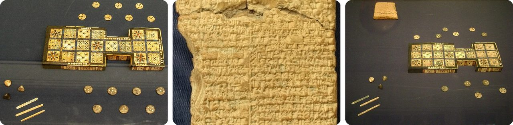
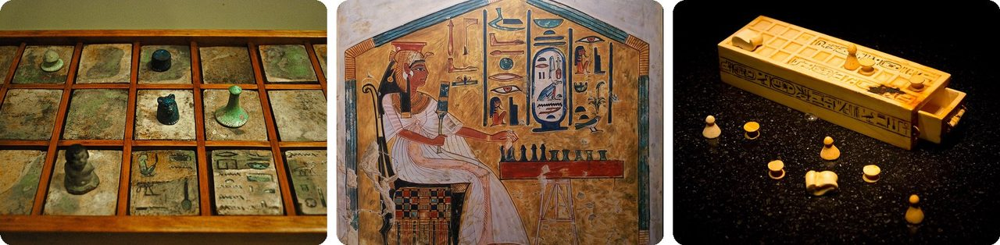
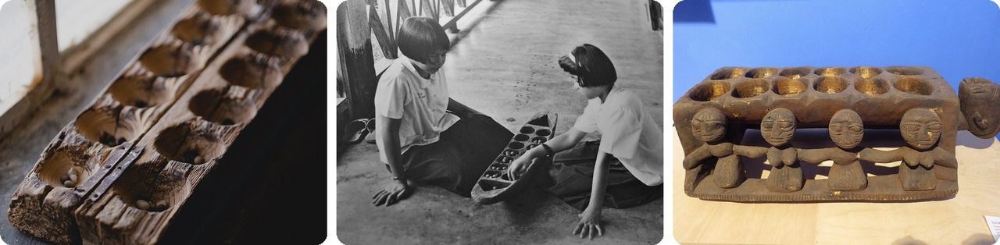
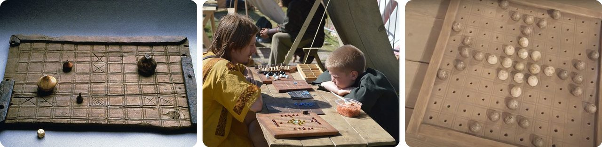
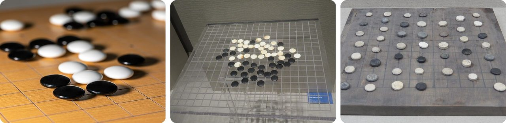
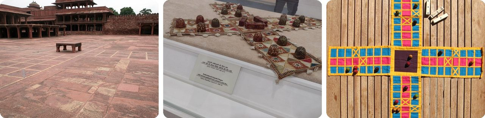
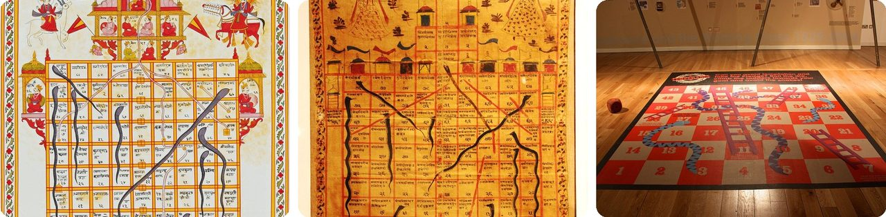
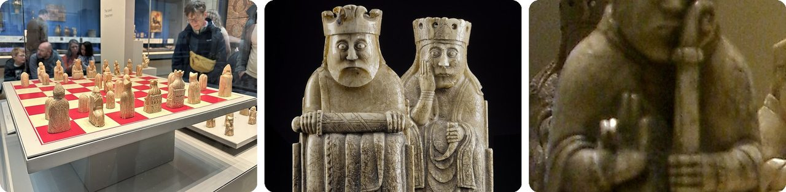
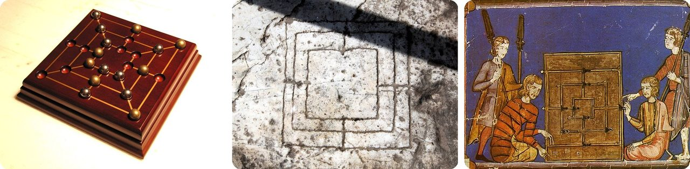
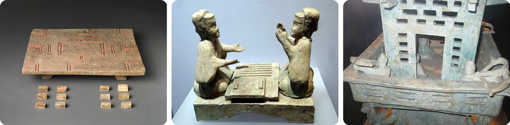

🌍 Top 10 Juegos de mesa antiguos
6 de noviembre de 2026
1. 🇮🇶 Las reglas del Juego Real de Ur aparecieron en una tablilla de barro

En las décadas de 1920 y 1930, el arqueólogo Leonard Woolley desenterró unos tableros preciosos en las tumbas reales de Ur, una ciudad antigua en lo que hoy es Irak. Los tableros tienen unos 4,500 años, de los más antiguos del mundo.Nadie sabía cómo se jugaba. Luego apareció una tablilla de barro escrita en cuneiforme (una escritura antigua con marcas en forma de cuña) por un escriba babilonio en el siglo II a. C. Con ella, Irving Finkel, del Museo Británico, descifró las reglas básicas.
La tablilla hasta trae fortunas para ciertas casillas, como "Encontrarás un amigo" o "Serás poderoso como un león". Y el juego nunca murió del todo: familias judías de Kochi, en la India, siguieron jugando una versión hasta la década de 1950.
Piénsalo como un juego de carreras donde algunas casillas traen galleta de la fortuna.
2. 🇪🇬 Los antiguos egipcios creían que el senet se jugaba en el más allá

El senet se juega en 30 casillas en tres filas de diez, y cada jugador avanza un equipo de fichas por el tablero. Una pintura de tumba que muestra el juego tiene unos 4,600 años, y a Tutankamón lo enterraron con el juego.Con el tiempo, el juego tomó un significado más grande. Su nombre quiere decir "pasar", y los egipcios empezaron a ver el recorrido por el tablero como el viaje del alma por el inframundo.
El Libro de los Muertos, una guía para el más allá, hasta describe a una persona muerta jugando senet contra un rival invisible.
En pocas palabras, era un juego de mesa que te podías llevar contigo, hasta el final.
3. 🌍 El mancala se juega "sembrando" semillas en hoyitos

El mancala no es un solo juego, sino toda una familia, que se juega con semillas, frijoles o piedritas en filas de hoyitos. Los hoyos pueden estar tallados en madera, cortados en roca o simplemente escarbados en la tierra.En tu turno, sacas todas las semillas de un hoyo y las vas dejando una por una en los hoyos siguientes, como un agricultor sembrando. Donde cae tu última semilla decide si capturas las semillas de tu rival.
Unos tableros tallados en roca en Eritrea y Etiopía tienen unos 1,400 años, y algunos expertos creen que uno en Jordania es mucho más antiguo. Hoy sigue siendo una de las familias de juegos más antiguas que se juegan en todo el mundo.
Es como jugar un juego de mesa con un puñado de semillas y cacahuates.
4. 🇳🇴 En el hnefatafl vikingo, un equipo tiene el doble de fichas

Los vikingos de Escandinavia jugaban hnefatafl, que probablemente significa "juego de tablero del puño", y el "puño" era el rey. El rey empieza en el centro del tablero, rodeado de sus defensores.Los equipos no son parejos, a propósito. Los atacantes tienen el doble de fichas que los defensores. Los atacantes intentan atrapar al rey, y el rey intenta escapar a la orilla o a las esquinas del tablero.
Nadie escribió las reglas vikingas completas. La mejor pista viene de una versión sami llamada tablut, que el científico sueco Carlos Linneo anotó en un viaje a Laponia en 1732.
O sea, son unas escondidas donde un niño intenta colarse entre toda una multitud.
5. 🇨🇳 El go (围棋, wéiqí) tiene más partidas posibles que átomos en el universo

El go se inventó en China hace más de 2,500 años, y se cree que es el juego de mesa más antiguo que la gente ha seguido jugando sin parar hasta hoy.Las reglas son sencillas: dos jugadores ponen por turnos piedras blancas y negras en una cuadrícula de 19 por 19 líneas, 361 puntos en total, tratando de rodear el mayor espacio. Pero el número de posiciones posibles es un 1 seguido de 170 ceros. El número de átomos en todo el universo es apenas un 1 seguido de unos 80 ceros.
Aun así, en 2015, el programa AlphaGo de Google DeepMind le ganó a un campeón europeo de go cinco partidas a cero.
Es un juego tan grande que al universo se le acaban los átomos antes de que al go se le acaben las jugadas.
6. 🇮🇳 Un emperador jugaba pachisi usando su patio como tablero

El pachisi viene de la India y se juega en un tablero en forma de cruz. En vez de dados, los jugadores tiran seis o siete conchas de cauri y cuentan cuántas caen con la abertura hacia arriba. El nombre viene de la palabra hindi para 25, el puntaje más alto que puedes sacar.El emperador mogol Akbar lo jugaba a lo grande. El piso de un patio, dividido en cuadros rojos y blancos, era el tablero, con una piedra elevada en el centro, y 16 personas vestidas con los colores de los jugadores hacían de fichas.
Si el tablero te parece conocido, es porque lo es. El Ludo, el Parcheesi y el Sorry! son versiones del pachisi.
Piénsalo como un parchís de tamaño real, con personas de verdad como fichas.
7. 🇮🇳 Serpientes y escaleras empezó como una lección para portarse bien

Serpientes y escaleras viene de la antigua India, donde se llamaba Moksha Patam, que significa "lección de liberación". Subir por el tablero representaba el viaje de una persona por la vida.Las escaleras representaban buenos hábitos como la generosidad, la fe y la humildad. Si caes en una, subes. Las serpientes representaban malos hábitos como el enojo y el robo. Si caes en una, te resbalas hacia abajo.
El juego llegó al Reino Unido en la década de 1890. En Estados Unidos, la compañía Milton Bradley lo empezó a vender como Chutes and Ladders (Resbaladillas y escaleras) en 1943.
En pocas palabras, cada escalera era un premio por ser amable, y cada serpiente, una lección.
8. 🏴 Algunas piezas de ajedrez de Lewis muerden sus propios escudos

En 1831, se encontró un escondite de figuritas talladas en la isla de Lewis, en Escocia. Casi todas estaban hechas de marfil de morsa hace unos 900 años, en el siglo XII. De 94 objetos, 78 eran piezas de ajedrez.Son famosas por sus caras chistosas, y algunas se ven preocupadas. Y cuatro de las torres son "berserkers", guerreros con ojos de loco que muerden el borde de su escudo de pura furia de batalla. Les han dicho "irresistiblemente cómicas".
El Museo Británico pagó 80 guineas por 82 de las piezas, unas 8,000 libras de hoy, y todavía las tiene. Otras 11 están en el Museo Nacional de Escocia.
Es un ajedrez donde las piezas se ven más nerviosas que los jugadores.
9. 🏴 Hay tableros del molino tallados en bancas de catedrales

En el juego del molino (nine men's morris), cada jugador tiene nueve fichas. Si pones tres en línea, haces un "molino" y puedes quitarle una ficha a tu rival. Si dejas a tu rival con solo dos, ganas.A la gente le gustaba tanto que tallaba tableros en piedra. Todavía se pueden encontrar rayados en las bancas de piedra de los claustros (pasillos techados) de las catedrales de Canterbury, Gloucester, Norwich y Salisbury, y de la Abadía de Westminster.
También se cortaban tableros gigantes en el pasto de los pueblos. Shakespeare hasta menciona uno en su obra de los años 1500 Sueño de una noche de verano: "El tablero del molino está lleno de lodo".
O sea, era el gato (tres en raya) de la Edad Media, pero más difícil y tallado en piedra.
10. 🇨🇳 El liubo (六博, liùbó) fue un éxito cuyas reglas se perdieron

Liubo significa "seis palitos". Dos jugadores movían seis fichas cada uno por un tablero cuadrado y, en vez de dados, tiraban seis palitos para decidir sus jugadas.Fue popularísimo durante la dinastía Han, hace unos 2,000 años. Los arqueólogos han encontrado tableros de liubo en tumbas antiguas, junto con figuras de cerámica de personas jugando. Pero cuando terminó la dinastía Han, el juego dejó de estar de moda rapidísimo, quizá porque el go se estaba haciendo popular, y se olvidó por completo.
El dibujo de su tablero también aparece en espejos de bronce de la época Han. Un espejo dice que fue "grabado con el dibujo de un tablero de liubo para alejar la mala suerte".
Es como un videojuego de moda de hace 2,000 años que ya nadie sabe jugar.
Dato curioso
En 1964, un vendedor de antigüedades en Edimburgo compró por 5 libras una figurita de marfil de morsa anotada como "guerrero de ajedrez". Cuando murió, su familia la guardó en un cajón durante décadas. En 2019, los expertos de Sotheby's la reconocieron como una pieza perdida del ajedrez de Lewis, y se vendió en 735,000 libras. Es uno de muchos tesoros olvidados que aparecieron en un ático, un cajón o una caja de cachivaches.
Créditos de las fotos (Wikimedia Commons)
- #1: Royal game of Ur, 2010-08-03.jpg by Unknown artistUnknown artist, CC BY-SA 4.0
- #1: Royal Game of Ur rules.jpg by unknown, CC BY-SA 3.0
- #1: Royal game of Ur,at the British Museum.jpg by unknown, CC BY 3.0
- #2: Senet (47429946982).jpg by Enoch Leung, CC BY-SA 2.0
- #2: Nefertari juega al Senet, tumba de Nefertari.jpg by Jl FilpoC, CC BY-SA 4.0
- #2: Senet game pieces (Tutankhamun).jpg by ddenisen (D. Denisenkov), CC BY-SA 2.0
- #3: Mancala board at an Ezidi home in June of 2019 in Wardia village near Shingal town 01.jpg by Levi Clancy, CC0
- #3: Thai-girls-playing-with-mancala-board-possibly-main-chakot-or-mak-khom.jpg by Pratyeka, CC BY-SA 4.0
- #3: Mancala Board in the National Ethnographic Museum, Warsaw.jpg by Ethan Doyle White, CC BY-SA 4.0
- #4: Nefatafl fra Trondheim (19896084560).jpg by NTNU Vitenskapsmuseet, CC BY 2.0
- #4: Kolomenskoe2015TAE 07 Players.jpg by Лапоть, CC0
- #4: 02022 Truso, hnefatafl game stones.jpg by Muzeum Archeologiczno-Historyczne w Elblągu, CC BY 3.0
- #5: Go -- 2021 -- 6732.jpg by Dietmar Rabich, CC BY-SA 4.0
- #5: Inner Mongolia Museum weiqi stones.jpg by BabelStone, CC BY-SA 3.0
- #5: Weiqi stones and Xiangqi pieces from Liao Shangjing.jpg by BabelStone, CC BY-SA 3.0
- #6: Pachisi Court-1.jpg by David Castor (dcastor), Public domain
- #6: Embroidered Gujrati Chaupar with sixteen painted ivory counters and dice. Circa AD 1800-50.jpg by TradingIdeas, CC BY 3.0
- #6: Pachisi-real.jpg by Micha L. Rieser, Attribution
- #7: Snakes and Ladders.jpg by Jain Miniature, Public domain
- #7: Gyan Chaupar National Museum India.JPG by Nomu420, CC BY-SA 3.0
- #7: Snakes and Ladders (8353940937).jpg by Neil Turner from Sowerby Bridge, United Kingdom, CC BY-SA 2.0
- #8: Lewis Chessmen, British Museum.jpg by APK, CC BY 4.0
- #8: NMSLewisChessmen28.jpg by National Museums Scotland, CC BY-SA 4.0
- #8: Lewis chessmen (crop).jpg by Jessica Spengler, CC BY 2.0
- #9: Nine Men's Morris (79731239).jpg by Andrew Magill from Boulder, USA, CC BY 2.0
- #9: Rocca San Silvestro Nine Men's Morris board.JPG by LepoRello, CC BY-SA 3.0
- #9: Nine Men's Morris with dice in Libro de los juegos.jpg by Alfonso X of Castile and Leon, Public domain
- #10: 漢 彩繪陶六博具（附骨製棋子）-Liubo Board and Pieces MET DP372026.jpg by unknown, CC0
- #10: Green-glazed pottery figurine representing liubo.jpg by 幽灵巴尼, CC BY-SA 3.0
- #10: Liubo players in pottery tower.jpg by BabelStone, CC BY-SA 3.0


.jpg){kind=link}

.jpg){kind=link}


.jpg){kind=link}


.jpg){kind=link}


.jpg){kind=link}
.jpg){kind=link}